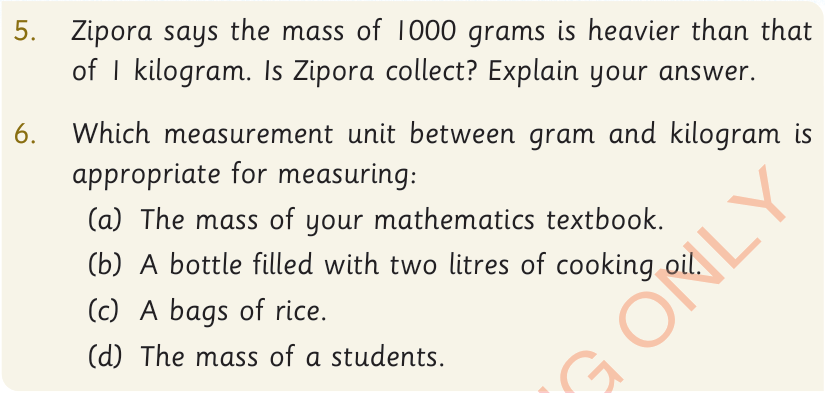

5.
Zipora says the mass of 1000 grams is heavier than that of 1 kilogram. Is Zipora correct? Explain your answer.
6.
Which measurement unit between gram and kilogram is appropriate for measuring:
(a) The mass of your mathematics textbook.
(b) A bottle filled with two litres of cooking oil.
(c) A bags of rice.
(d) The mass of a students.

Measurement of Volumes
Volume is the amount of space occupied by an object. It can be measured by using non-standard and standard tools.
Non-standard tools used for measuring volume
Common tools used for measuring volume include spoons, cups and buckets. The following picture shows pupils measuring the volume of water by using cups and buckets.